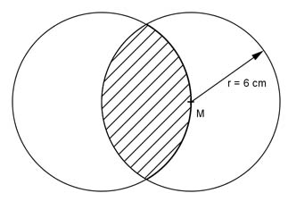

Aufgabe 121 Wie groß ist die schraffierte Fläche A?  Satz von Pythagoras im Dreieck ABC: s r r r2 = (---)2 + (---)2 | -(---)2 2 2 2 r2 s2 r2 - ---- = ---- |*4 4 4 4r2 - r2 = s2 s2 = 3r2 |√ s = r * √3 s = 6 cm * √3 s = 10,4 cm Mittelpunktswinkel bei A = 120° Fläche eines Kreissegments A: A = AKreissektor - ADreieck r --- r2 * π * 120° s * 2 A = --------------- - ---------- 360° 2 62 cm2 * π 10,4 cm * 3 cm A = ------------ - ----------------- 3 2 A = 37,7 cm2 - 15,6 cm2 A = 22,1 cm2 Fläche der beiden Segmente: Agesamt = 2 * a = 2 * 22,2 cm2 = 44,2 cm2